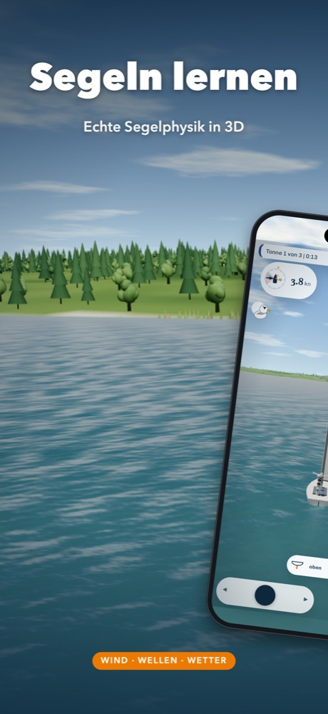
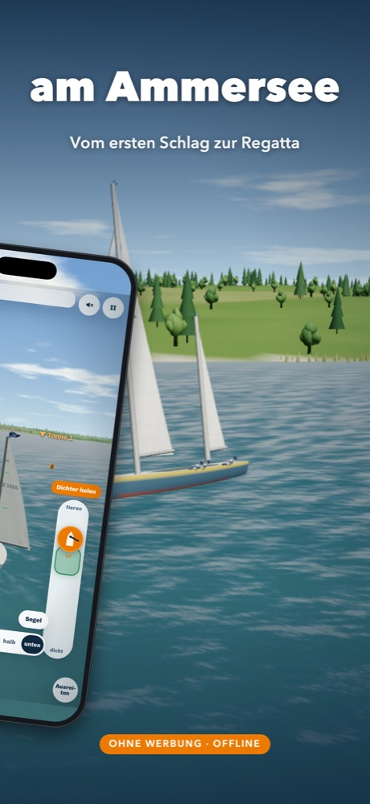
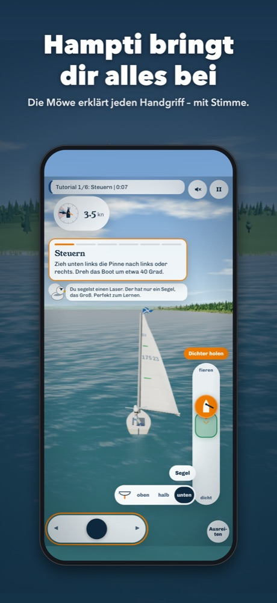

Segeln lernen am Ammersee
Vom ersten Schlag bis zur Regatta: echte Segelphysik in 3D, Möwe Hampti-Damti als Lehrer, Knotenschule, Missionen und Prüfungen. Ohne Konto, ohne Werbung, komplett offline.



Was dich erwartet
- Wind, Böen, Krängung und Abdrift wie auf dem Wasser.
- Schot mit dem Daumen trimmen, Schwert oben, halb oder unten.
- Geführtes Tutorial, Tonnenkurse, Anlegemanöver, Gewitterfront und Regatten.
- Knotenschule mit Palstek, Achtknoten, Klampenschlag und mehr.
- Optional: das Schiffer-Paket als einmaliger In-App-Kauf.